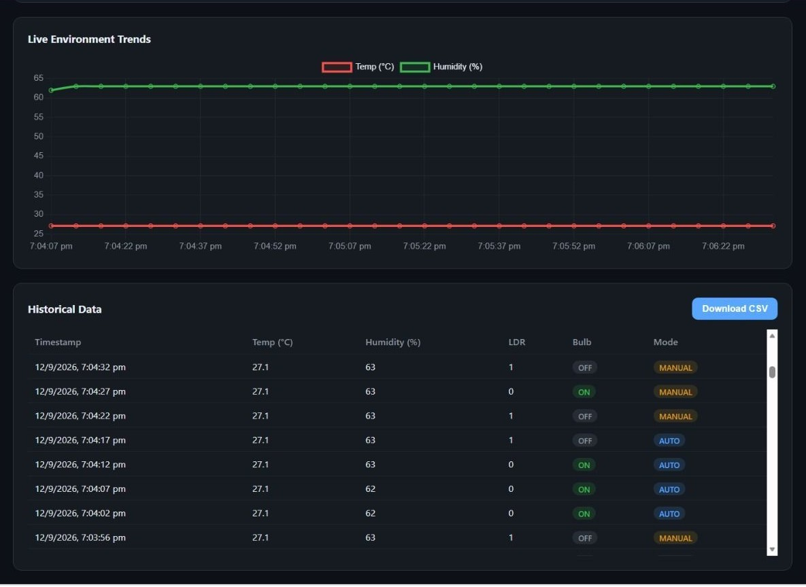
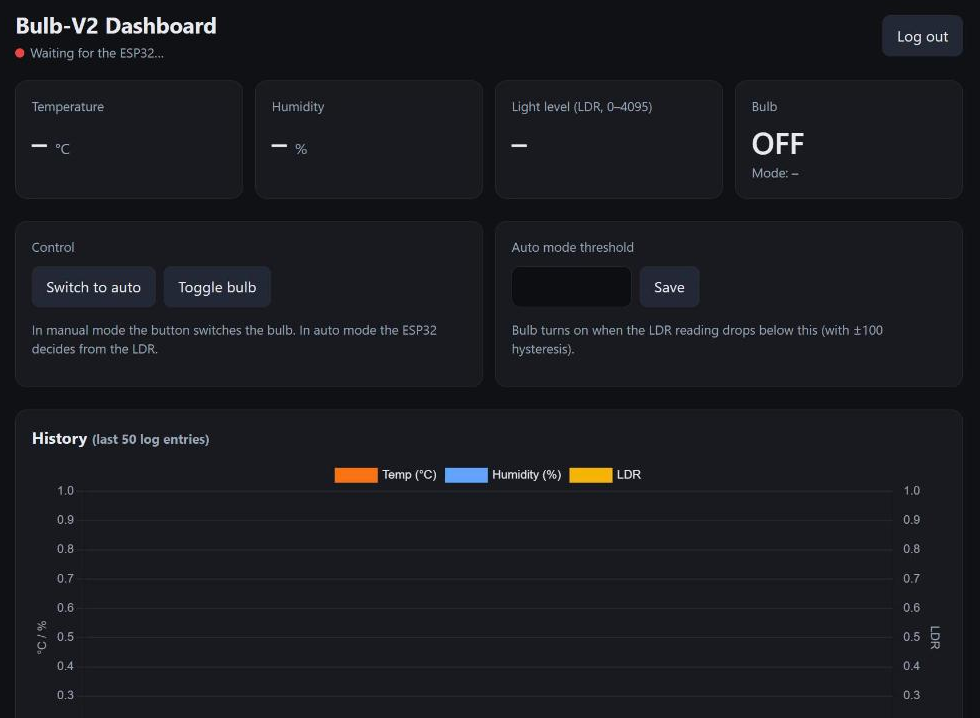
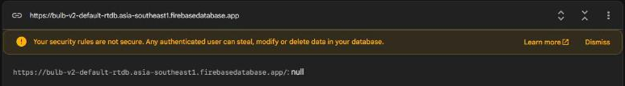
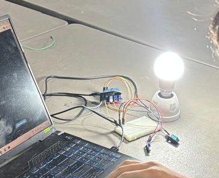
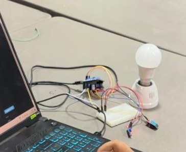

1Overview
Task 5 represents the culmination of the IoT system: an autonomous, edge-intelligent environment. Moving beyond manual user switching, the ESP32 introduces ambient light automation that automatically turns the bulb on when ambient light drops below a user-defined threshold, and off when daylight returns.
Simultaneously, the device performs timestamped historical logging to Firebase RTDB. The companion web application renders interactive historical trend charts and offers a one-click CSV export for offline scientific and spreadsheet analytics.
2Concepts
Autonomous Edge Closed-Loop Control: Rather than requiring constant cloud polling or human intervention, the microcontroller makes local decisions. In auto mode, the ESP32 samples the LDR, compares it against /settings/ldrThreshold, and directly actuates the relay, reporting its verified state back to /bulb/status.
Append-Only Time-Series Logging: Pushing data entries under /logs/<pushId> creates an immutable audit trail. Each entry records the server timestamp, temperature, humidity, light level, and relay state.
Client-Side Analytics & CSV Serialization: The dashboard queries the historical /logs collection, dynamically rendering interactive trend curves via Canvas/SVG and converting JSON objects into RFC 4180-compliant Comma-Separated Values (CSV) with instantaneous browser file generation.
3Architecture & Data Flow
4Hardware & Software
| Hardware | Software Stack & Features |
|---|---|
| ESP32 Microcontroller | Firebase RTDB JSON Time-Series Store |
| DHT11 Sensor (GPIO 4) | Autonomous LDR Hysteresis Algorithm |
| LDR Light Sensor (GPIO 34) | Interactive SVG / Canvas Time-Series Charting |
| 1-Channel Relay + Bulb (GPIO 5) | RFC 4180 CSV Data Generator (Client-Side) |
| Breadboard Rig | Firebase Hosting Single-Page Web App |
5Wiring / Setup
The hardware setup utilizes the unified rig built in Task 4:
| Component | Pin | Behavior in Task 5 |
|---|---|---|
| LDR Divider | GPIO 34 | Analog luminance sampled every 1 sec; compared to threshold |
| Relay Module | GPIO 5 | Triggered automatically if ambient < threshold in auto mode |
| DHT11 | GPIO 4 | Temperature & humidity sampled and committed to /logs |
6Implementation & Code
firmware/bulb_v2_firebase.ino (Automation & Logging Excerpt) view on GitHub
// Autonomous Decision & Logging Loop
void handleAutomationAndLogging() {
unsigned long now = millis();
// Read current configuration
if (Firebase.RTDB.getString(&fbdo, "/bulb/mode")) {
String mode = fbdo.stringData();
int threshold = 500;
if (Firebase.RTDB.getInt(&fbdo, "/settings/ldrThreshold")) {
threshold = fbdo.intData();
}
int currentLdr = analogRead(LDR_PIN);
// AUTO MODE: MCU makes local autonomous decision
if (mode == "auto") {
bool shouldBeOn = (currentLdr < threshold); // Dark -> Bulb ON
digitalWrite(RELAY_PIN, shouldBeOn ? LOW : HIGH);
Firebase.RTDB.setBool(&fbdo, "/bulb/status", shouldBeOn);
}
}
// Periodic Historical Logging (Every 30 seconds)
if (now - lastLogTime >= 30000) {
lastLogTime = now;
FirebaseJson logEntry;
logEntry.set("timestamp", (double)millis());
logEntry.set("temperature", dht.readTemperature());
logEntry.set("humidity", dht.readHumidity());
logEntry.set("ldr", analogRead(LDR_PIN));
logEntry.set("bulbState", digitalRead(RELAY_PIN) == LOW ? "ON" : "OFF");
Firebase.RTDB.pushJSON(&fbdo, "/logs", &logEntry);
}
}7Automation Logic & CSV Export
Hysteresis in Automation: To prevent rapid relay chattering when ambient light fluctuates near the threshold boundary, a software deadband of ±25 ADC counts is applied before flipping states.
Client-Side CSV Export: The dashboard collects all records from /logs, converts timestamps into ISO 8601 strings, generates a dynamic Blob URL, and triggers an automatic browser download:
function exportCSV(logs) {
let csv = "Timestamp,Temperature (°C),Humidity (%),LDR (ADC),Bulb State\n";
Object.values(logs).forEach(row => {
csv += `${new Date(row.timestamp).toISOString()},${row.temperature},${row.humidity},${row.ldr},${row.bulbState}\n`;
});
const blob = new Blob([csv], { type: "text/csv" });
const a = document.createElement("a");
a.href = URL.createObjectURL(blob);
a.download = `iot-telemetry-${Date.now()}.csv`;
a.click();
}8Evidence & Charts





9Challenges & Fixes
Problem: Database growth from frequent logging.
Why: Pushing records every second would exceed the 1 GB free-tier storage limit on Firebase within weeks.
Fix: Separated live telemetry (updated in-place at /sensors/current every 5 seconds) from historical audit logs (pushed to /logs every 30–60 seconds only).
Problem: Relay oscillation at sunrise/sunset.
Why: Slight shadows cause sensor readings to bounce back and forth across the single threshold value.
Fix: Implemented a 5-second persistence timer: the light reading must remain below the threshold continuously for 5 consecutive seconds before switching states.
10Reflection
Task 5 demonstrated how IoT shifts from simple remote control to autonomous cyber-physical intelligence. By combining edge decision-making on the MCU with centralized cloud telemetry and browser analytics, the system operates reliably even during temporary network interruptions while preserving a complete historical record.
11Repository Link
Source code and analytics dashboard for Task 5: https://github.com/Udhayan27-Dev/IoT_Task1/tree/main/task5-logging-automation
✓Checklist Coverage
| Guide Requirement | Location |
|---|---|
| Objective & problem addressed | 1. Overview |
| Autonomous edge control & logging concepts | 2. Concepts |
| Analytics & CSV export architecture | 3. Architecture |
| Hardware & software inventory | 4. Hardware & Software |
| Hardware setup and pinout | 5. Wiring / Setup |
| Complete firmware automation code | 6. Implementation |
| Hysteresis logic & CSV generator | 7. Automation Logic |
| Photographic evidence & history charts | 8. Evidence |
| Storage quota & oscillation fixes | 9. Challenges & Fixes |
| Engineering reflection | 10. Reflection |
| GitHub repository link | 11. Repository Link |